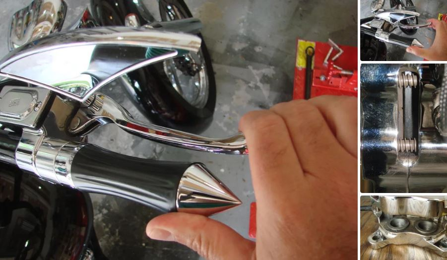
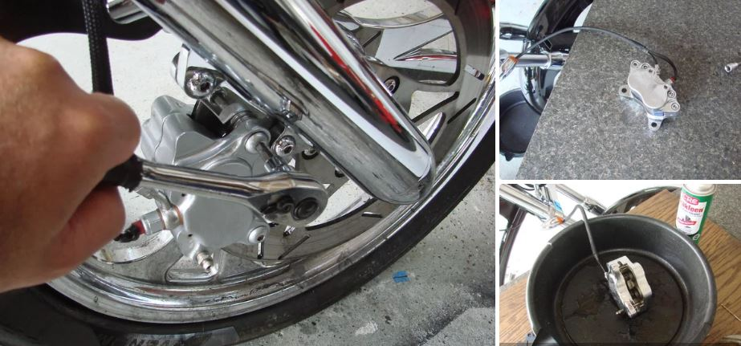
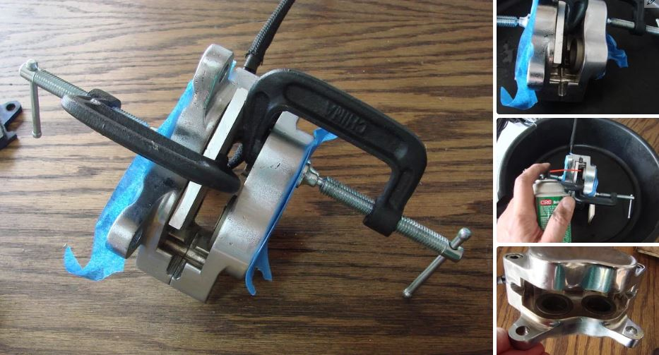
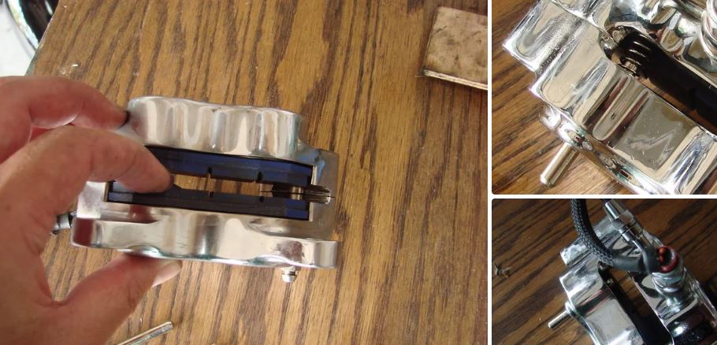

BRAKE 
Details how to go about fixing your motorcycle brake caliper when the brake lever starts getting uncomfortably close to the hand grip with resulting loss of braking power. If you pump quickly once or twice the brakes work again, but after you release the lever for a short while, the next pull on the lever will again result in the brake lever sinking almost all the way back to the hand grip. This behavior feels EXACTLY like air in the system. If air was in the system, then bleeding the hydraulics would fix the problem. But, for this problem, you can bleed the brakes until you are blue in the face and you won't have fixed anything.
While this 'ible will detail the repair process for the front brakes, the procedure for the rear brake caliper is the same. The steps also show the removal and re-installation of the brake pads, so you can use this guide for changing your brake pads as well. Think of this as a twofer!
Before you do anything, please be aware that proper functioning brakes are critical to your safety as well as the safety of other road users. Brake failure can result in death. If you are unsure of your mechanical abilities, please do not attempt this repair.
I developed this method from a vague hint on a motorcycle forum as to what the problem might be. I hope you find it useful.
Step 1: How the Brakes Are Supposed to Work The problem occurs gradually over weeks of riding which gives you plenty of time to correct the fault. Once the problem has started appearing and the bike is not ridden for a week or 2, the failure can be more sudden. Fortunately you will feel this during your pre-ride check after the bike has been garaged for a while (and I’m assuming you ALWAYS check your bike before riding… right?!!)
The brake system has a ratcheting action. Every time you apply the brakes, the pistons press the brake pad against the rotor creating friction which slows the bike down and also results in loss of material on the brake pad itself. This wearing process occurs slowly or else we would be changing pads daily instead of after thousands of miles. When the lever is released, the pressure is released and a set of springs and a little bit of vibration and bumping from the rotor cause the brake pads to push the pistons backward slightly to remove the friction from the rotor. As the pads get thinner from repeated brake application, the pistons slowly move out of the caliper over time so that the brake lever engages more or less at the same distance from the hand grip. This is the so-called ratcheting action of the hydraulic brake system. As this occurs, the level of hydraulic fluid in the brake reservoir will be dropping so maintenance top-ups are required.
Over time, dirt and brake dust coat the pistons in the brake caliper. Some of this dirt may work itself into the piston seal when the pistons retract a bit after brake application. Sometimes, instead of the piston sliding forward through the seal when the brakes are applied, the piston gets stuck to the seal and rolls the seal forward when the brake lever is pulled. When the brake lever is released, the seal restores its normal shape causing the piston to be pulled backward. The ratcheting action is lost. As the brakes wear, the piston gets further and further from the friction point. The result is that the brake lever activation point moves closer and closer to the handgrip.
The speed at which the piston retracts back into the caliper due to elastic action of the seal is quite slow so 2 quick pumps on the brake lever generally result in the pistons making contact with the pads, and the lever works at the correct distance from the handgrip. The reason pumping works is because the first pump moves the piston outward as much as the hydraulic fluid pushed into the system from the hand lever allows, and the second pump forces additional hydraulic fluid in behind the piston which moves it out to the pad and generates enough friction to stop the motorcycle.
Crikey, a lot of words to describe this problem. So on with the fix.
Step 2: The Easy Fix - If Luck Is on Your SideThe simplest way to correct this problem is to clean the pistons with brake cleaner while the caliper is on the bike. I recommend you try this first before you try the dis-assembly method which will be detailed next. All we are doing in the step is to try and remove as much dirt as possible to see if that fixes the problem. Access to the pistons is poor though.
Pump the brake lever until it is able to lock the wheel. The pistons should be extended as far as required under normal operation. If you don’t have a helper, maintain this pressure on the lever and use tape to hold the lever in the pressurized condition to keep the pistons extended. Then spray brake cleaner all around the outside of the pistons to displace as much dirt as possible. Then release the brakes. Most likely you will see the pistons slowly retract back into the caliper over time – say 30 seconds or so. If you grab the lever and it sinks all the way back to the hand grip, repeat the cleaning process 3 or 4 times until the lever is firm and brakes are applied when the lever is far from the hand grip - the "as new" condition. At this point you are done and you have created a new ratcheting position for your brakes. Your brake lever will feel much firmer. If the lever starts sinking again over weeks and months of riding, repeat the process as needed.
If this doesn't work, you are going to need to go to the next level of correction which requires removal of the caliper from the bike to un-stick the pistons from the seals.
Step 3: The Fix for When Luck Is Not on Your Side If the simple fix doesn't work, more invasive surgery is required to unstick the pistons from the seal.
First remove the caliper from the bike. The caliper on my bike is easily removed - there are just 2 bolts holding it to the lower leg of the front fork. Once the caliper is removed, I use a portable table to rest the caliper on so that I can work at a comfortable working height. .
Use Brake Parts Cleaner to clean the rest of the dirt from the caliper and remove the brake pads. There are two set screws that keep the brake pad retaining pins in place. Once these are removed, you can use a punch to tap the pins out. The springs shouldn't fly out at this point and can be removed easily with your fingers. Then slide the pads out. Inspect them for wear. Now is a good a time to replace them if they are close to the wear limit.
Use more Brake Parts Cleaner to clean properly around the pistons now that they are accessible.
Step 4: Un-sticking the Pistons Use clamps to secure all but one piston. I use a small plate on the one side to clamp two pistons together. We are going to un-stick one piston at a time. If you have chromed calipers like mine, take care to protect the chrome surface with painters tape. With 3 pistons clamped (some calipers have 6 pistons and some only 2 so what you are trying to accomplish is to have only one piston free at a time), pump the lever and observe the behavior of the free piston. If it moves forward and back as the brake lever is pulled and released, then the piston is stuck to the seal. The elastic action on the seal is pulling the piston back. Yup, looks just like a piston on a rubber band!
BE CAREFUL NOT TO GET OVER ZEALOUS WITH REPEATED PUMPING OF THE LEVER OR YOU WILL PUMP THE PISTON RIGHT OUT OF THE CALIPER. IT IS A PAINFUL JOB GETTING THE PISTON BACK IN. ONCE OR TWICE IS ALL YOU NEED TO SEE IF IT IS STUCK OR NOT.
If the piston is partially out of the caliper, spray brake cleaner around the piston to clean away any dirt and use a clamp or finger pressure to press the piston all the way back into the caliper. This will help break the stickiness… or not depending on the kind of luck you have. Then pump the lever so that the piston moves out about ¼”. If the piston moves out this far and doesn’t suck back into the caliper, then it is working correctly. Spray brake cleaner around the piston to clean away any dirt and press the piston back into the caliper. Pull the brake lever to move the piston out about ¼”. Then release the brake lever and make sure that the piston stays in this position for about 15 seconds without it being sucked backward into the caliper by the seal. If it starts moving back into the caliper, try wiping the exposed surface of the piston with brake fluid to lubricate the interface between the metal piston and the rubber seal. Then press the piston all the way back into the caliper. Repeat this process (pump out ¼” wipe and push back) until the piston can move outward and stay outward when the brake lever is released. Finally push the piston back into the caliper.
Remove the clamp from one of the other pistons and clamp the piston you just free’d. Now get to work on the remaining pistons, one at a time until they are all free.
Keep an eye on the level of hydraulic fluid in the reservoir. When you press all the pistons back into the caliper you may accidentally overflow the reservoir so watch for this. The converse is true – you want enough fluid in the reservoir so that you don’t introduce air into the system or you will have double trouble and have to bleed the system.
When the last piston is done, release all the clamps and pull on the brake lever. All the pistons should move outward and stay outward. One piston may have more friction than the others and stay back in the caliper. It is easy enough to test by re-clamping the pistons that moved and checking the remaining piston on it’s own. Now press all the pistons back into the caliper.
Step 5: Re-installation Re-installation of the brake pads is straightforward. Slide the pads into place and use your finger tip to keep them separated.
Then slide one of the pins in until it appears in the slot. Now compress the spring and place it over the end of the exposed pin and the other end presses up against the far side brake pad. Now slide the pin all the way through. Repeat with the second pin. Then apply blue locktite to the set screws and screw them in to keep the pins in place. If there is a torque spec for your caliper - be sure to use it.
Rebolt the caliper to the bike using the correct torque settings and locktite recommended for your bike. I use blue locktite for this but check your repair manual for specific recommendations. Brakes are safety critical - short cuts could end your life. Double check everything. If in doubt, please refer to a mechanic for detail instruction.
Step 6: Test and Done....Pull the brake lever once or twice to get the pistons seated against the pads. Wait about a minute or so (clean up your tools!) and then pull the brake lever again . It should engage far from the handgrip and be nice and firm. You are done. Roll the bike forward and backward checking on the brake action. Then do a slow (very slow 5mph is plenty) test ride to ensure you have proper function of the brakes before you taker a longer test ride.
Tip:Put the end of the brake into a container and pump out the brake fluid carefully
Clean:Brake caliper, pin, brake pad retaining pin, brake pads, brake pad spring
Rear brake -- brake shoe lining glazed area – Repair. Sand the glazed area with course sand paper (ex. Brake camshaft)
Tip:After sanding the glazed areas, clean the brake shoe with a cloth.
Measure Break – brake shoe lining thickness out of the specification replace.